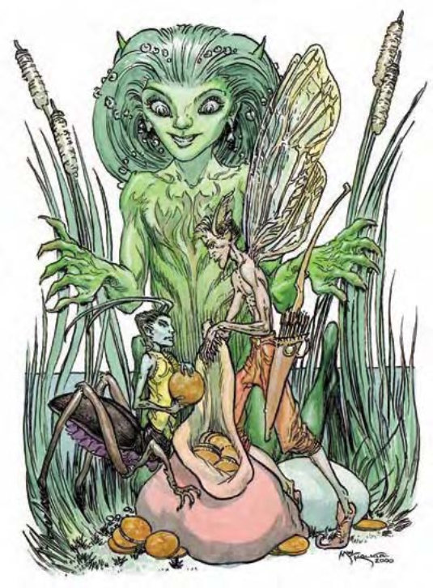

小妖精是隐居型的精类生物，只在对抗邪恶与丑陋或保卫家园时才会现身。据说小妖精只会因重伤或疾病而死亡。
小妖精使用类法术能力与迷你武器与对手对抗。比起单挑，他们宁可进行埋伏或用点小策略。
技能：所有小妖精在进行"搜索"、"侦察"与"聆听"检定时都具有+2种族加值。
这种超小生物具有人类的头、躯干与手臂，还有蟋蟀的翅膀、触角与脚。
格利精天性轻浮又爱嬉闹。他们不怕大生物，还以作弄他们为乐。最爱用的玩笑包括偷食物、弄垮帐篷及用"腹语术"假装物体说话。
格利精一跃可以很远。他们具有浅蓝色的皮肤、森林绿的头发及长满褐毛的腿。通常会穿着短外衣或亮彩背心，钮扣由超小的珠宝制成。
格利精约1.5英尺高，重达1磅。
格利精通晓木族语，部分通晓通用语。
| 资料栏位 | 格利精 (Grig) 超小型精类生物 |
| 生命骰 | d6+1 (2HP) |
| 先攻 | +4 |
| 速度 | 20英尺 (4格)、飞行40英尺 (不良) |
| 防御等级 | 18 (+2体型、+4敏捷、+2天生)、接触16、措手不及16 |
| 基本攻击/擒抱 | +0 / -11 |
| 攻击 | 短剑+6近战 (1d3-3 / 19-20)；或长弓+6远程 (1d4-3 / x3) |
| 全力攻击 | 短剑+6近战 (1d3-3 / 19-20)；或长弓+6远程 (1d4-3 / x3) |
| 占据/触及 | 2.5英尺 / 0英尺 |
| 特殊攻击 | 类法术能力、小提琴 |
| 特殊能力 | 伤害减免5/寒铁、昏暗视觉、法术抗力17 |
| 豁免 | 强韧+1、反射+6、意志+3 |
| 属性 | 力量5、敏捷18、体质13、智力10、感知13、魅力14 |
| 技能 | 手艺 (任一) +4、脱逃+8、躲藏+18、跳跃+3、聆听+3、潜行+10*、表演 (弦乐器) +6、搜索+2、侦察+3 |
| 专长 | 闪避B、隐匿、武器娴熟B |
| 环境 | 温带沙漠 |
| 组织 | 成队 (2-4)、一团 (6-11) 或一族 (20-80) |
| 宝藏 | 无钱币、50%宝物、50%物品 |
| 阵营 | 总是中立善良 |
| 进化 | 1-3HD (超小型) |
| 等级修正值 | +3 |
以小妖精标准而言，格利精算是十分凶暴的。他们会大胆地用弓箭匕首攻击对手。
类法术能力：每天3次――"魔法易容"、"纠缠术" (DC=13)、"隐形" (只对自身有效)、"烟火术" (DC=14)、"腹语术" (DC=13)。施法者等级9。豁免检定DC的调整值与魅力调整值相同。
小提琴 (超自然)：在每个格利精乐团中，都有一个格利精负责演奏格利精版的超小小提琴。30英尺内所有的非精类生物必须通过意志检定 (DC=12)，否则会受到有如"奥图迷舞"法术效果影响，直到演奏结束。豁免检定DC的调整值与魅力调整值相同。
技能：格利精在进行"跳跃"检定时具有+8种族加值。
*他们在森林环境中进行"潜行"检定时具有+5种族加值。

他们看起来像小型的精灵：绿皮肤、尖耳朵、手指脚趾有蹼、还有双银色的大眼睛。
尼克精是水生小妖精，栖息在池塘湖泊中，并保护该地的原始风貌。他们甚至比大部分精类生物还要多疑，认为所有侵入者都可疑且具有恶意。
大部分的尼克精都苗条美丽，绿油油的皮肤上长有些许鳞片，还有一头深绿色的头发。女性通常会将贝壳与珍珠编成饰品戴在头发上，并穿着由海草织成的彩色服饰。男性则穿着同材质的缠腰布。尼克精不太喜欢离开居所。
尼克精约4英尺高，45磅重。
尼克精通晓水族语与木族语，部分通晓通用语。
| 资料栏位 | 尼克精 (Nixie) 小型精类生物 (水生) |
| 生命骰 | 1d6 (3HP) |
| 先攻 | +3 |
| 速度 | 20英尺 (4格)、游泳30英尺 |
| 防御等级 | 14 (+1体型、+3敏捷)、接触14、措手不及11 |
| 基本攻击/擒抱 | +0 / -6 |
| 攻击 | 短剑+4近战 (1d4-2 / 19-20)；或轻型十字弓+4远程 (1d6 / 19-20) |
| 全力攻击 | 短剑+4近战 (1d4-2 / 19-20)；或轻型十字弓+4远程 (1d6 / 19-20) |
| 占据/触及 | 5英尺 / 5英尺 |
| 特殊攻击 | "魅惑人类" |
| 特殊能力 | 两栖、伤害减免5/寒铁、昏暗视觉、法术抗力16、"水中呼吸"、理解动物 |
| 豁免 | 强韧+0、反射+5、意志+3 |
| 属性 | 力量7、敏捷16、体质11、智力12、感知13、魅力18 |
| 技能 | 哄骗+8、手艺 (任一) +5、脱逃+6、驯养动物+8、躲藏+7*、聆听+8、表演 (歌唱) +7、搜索+3、察言观色+5、侦察+8、游泳+6 |
| 专长 | 警觉、闪避B、武器娴熟B |
| 环境 | 温带水域 |
| 组织 | 成队 (2-4)、一团 (6-11) 或一族 (20-80) |
| 宝藏 | 无钱币、50%宝物 (只有铁制或石制品)、50%物品 (无卷轴) |
| 阵营 | 总是绝对中立 |
| 进化 | 2-3HD (小型) |
| 等级修正值 | +3 |
尼克精靠"魅惑人类"来阻止敌人，只有在自卫或保疆卫土时才会开战。
魅惑人类 (类法术能力)：尼克精每天可施展3次"魅惑人类" (施法者等级4)。受术者需通过意志检定 (DC=15)，否则会被魅惑24小时。大部分被魅惑的生物会从事重度劳力、守卫疆土或尼克精社群中其他较为繁重的工作。在魅惑失效之前，尼克精会把他们押走，并命令他们继续离开。豁免检定DC的调整值与魅力调整值相同。
两栖 (特异)：虽然尼克精为水生亚种，但也可以在陆上呼吸。
"水中呼吸法" (类法术能力)：尼克精每天可施展1次"水中呼吸法" (施法者等级12)，多半用于被魅惑的生物上。
理解动物 (特异)：与德鲁伊的"理解动物"职业特性相同，但尼克精在检定时具有+6种族加值。
技能：尼克精在进行任何特殊动作或闪身避祸时，"游泳"检定具有+8种族加值。即使分心或受困，他们在进行"游泳"检定时都可以随时取10。若以直线前进，则可在游泳时进行奔跑动作。
*尼克精在水中进行"躲藏"检定时具有+5种族加值。
他们看起来像非常小的精灵，但耳朵更长，还有对薄翅。
皮克精是爱恶作剧的快乐生物，喜欢带旅行者走上歧路。然而他们在遇上邪恶生物时，也会展现出惊人的愤怒。这种小妖精喜欢骗取守财奴的财富。他们并不觊觎这些宝物，而是想借机嘲弄或让贪心者受挫。如果受害者表现得并不贪心，同时具有足够的幽默感，甚至还可能有机会在皮克精的收藏中挑选奖赏。
皮克精穿着亮丽的服饰，通常包括卷曲的尖帽或尖鞋。
皮克精约2.5英尺高，重30磅。
皮克精通晓木族语与通用语，可能也通晓其他语言。
| 资料栏位 | 皮克精 (Pixie) 小型精类生物 |
| 生命骰 | 1d6 (3HP) |
| 先攻 | +4 |
| 速度 | 20英尺 (4格)、飞行60英尺 (良好) |
| 防御等级 | 16 (+1体型、+4敏捷、+1天生)、接触15、措手不及12 |
| 基本攻击/擒抱 | +0 / -6 |
| 攻击 | 短剑+5近战 (1d4-2 / 19-20)；或长弓+5远程 (1d6-2 / x3) |
| 全力攻击 | 短剑+5近战 (1d4-2 / 19-20)；或长弓+5远程 (1d6-2 / x3) |
| 占据/触及 | 5英尺 / 5英尺 |
| 特殊攻击 | 类法术能力、特殊箭 |
| 特殊能力 | 伤害减免10/寒铁、高等隐形、昏暗视觉、法术抗力15 |
| 豁免 | 强韧+0、反射+6、意志+4 |
| 属性 | 力量7、敏捷18、体质11、智力16、感知15、魅力16 |
| 技能 | 哄骗+7、专注+4、脱逃+8、躲藏+8、聆听+10、潜行+8、骑术+8、搜索+9、察言观色+6、侦察+10 |
| 专长 | 警觉、闪避B、武器娴熟B |
| 环境 | 温带森林 |
| 组织 | 成队 (2-4)、一团 (6-11) 或一族 (20-80) |
| 宝藏 | 无钱币、50%宝物、50%物品 |
| 阵营 | 总是中立善良 |
| 进化 | 2-3HD (小型) |
| 等级修正值 | +4 (施展"奥图迷舞"时+6) |
平日悠哉悠哉的皮克精一旦遇上邪恶生物或不速之客，会展开粗暴又激烈的攻击。隐形及其他能力使他们具有绝对优势，可以扰乱或驱赶对手。
高等隐形 (超自然)：为恒常能力，皮克精即使在攻击时都保持隐形，且可随时压抑或重启此能力，视为即时动作。
类法术能力：每天1次――"次级困惑术" (DC=14)、"舞光术"、"侦测混乱"、"侦测善良"、"侦测邪恶"、"侦测守序"、"侦测思想" (DC=15)、"解除魔法"、"纠缠术" (DC=14)、"永恒幻影" (DC=19，只限可视可听的组件)、"变形术" (只对自身有效)。施法者等级8。豁免检定DC的调整值与魅力调整值相同。
每10个皮克精每天可施展一次"奥图迷舞" (施法者等级8)。
特殊箭 (特异)：皮克精有时会配戴不会造成伤害的箭，用以消除记忆或使生物陷入沉睡。
失忆箭：被这只箭击中的对手必须通过意志检定 (DC=15)，否则会失去所有记忆。豁免检定DC的调整值与魅力调整值相同，并包含+2种族加值。受术者会保有原有技能、语言及职业能力，但忘记所有事情，直到受到"医疗术"治愈或用"有限愿望"、"愿望术"或"奇迹术"恢复记忆。
睡眠箭：被这只箭击中的对手无论生命骰多少，都必须通过强韧检定 (DC=15)，否则会受到"睡眠术"影响。豁免检定DC的调整值与魅力调整值相同，并包含+2种族加值。
皮克精第一个职业等级由精类生物的1HD交换而来，所以1级皮克精术士具有1d4生命骰、+0基本攻击加值、术士的基本豁免加值及术士的技能点数与职业技能。
皮克精人物具有下列种族特性：
――+4力量、+8敏捷、+6智力、+4感知、+6魅力。
――小型、防御等级+1加值、攻击检定+1加值、"躲藏"检定+4加值、擒抱检定-4减值、举物及负重能力上限为中型人物的四分之三。
――皮克精的基本行走速度为20英尺，飞行速度60英尺 (良好)。
――昏暗视觉。
――技能：皮克精在进行"聆听"、"搜索"与"侦察"检定时具有+2种族加值。
――种族专长：皮克精具有额外专长"闪避"。
――+1天生防御加值。
――特殊攻击 (见前文)：类法术能力。
――特殊能力 (见前文)：伤害减免10/寒铁、高等隐形、法术抗力15+职业等级。
――母语：通用语、木族语。额外语言：精灵语、侏儒语、半身人语。
――适合职业：术士。
――等级修正值：+4 (可施展"奥图迷舞"者+6)。